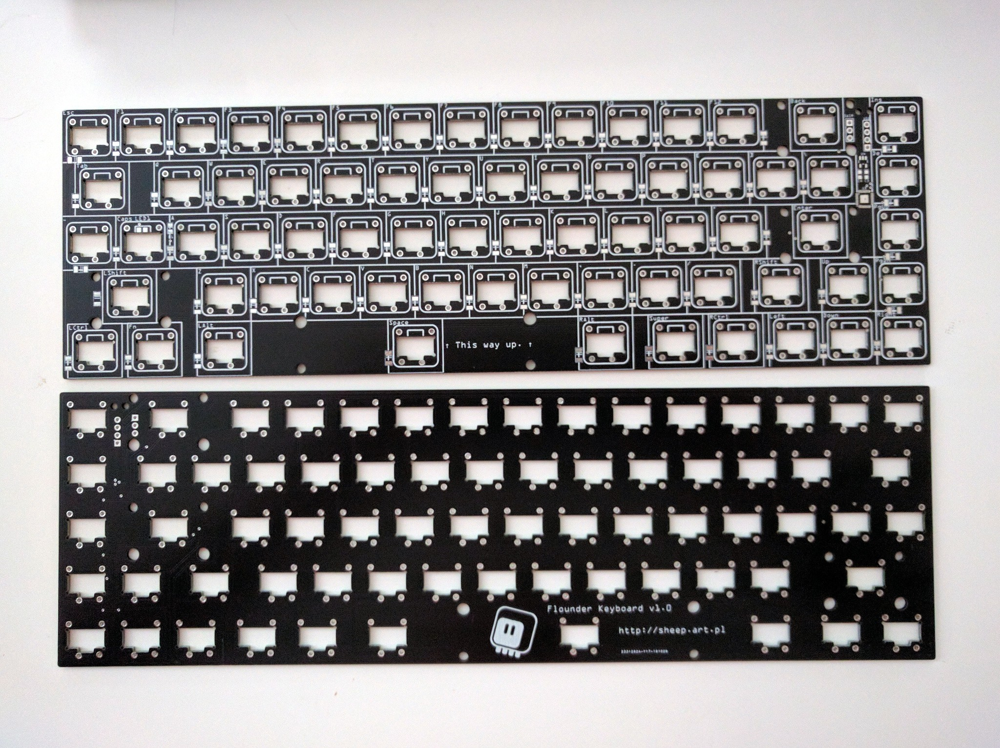
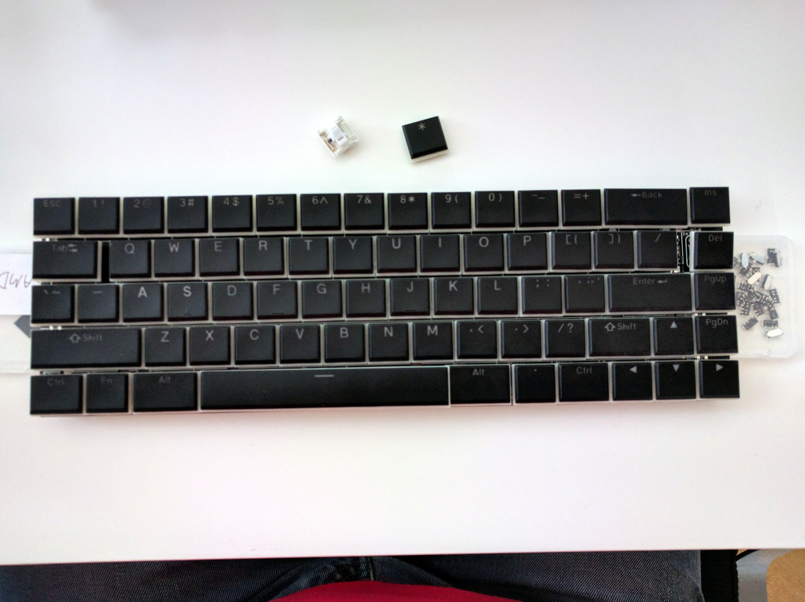
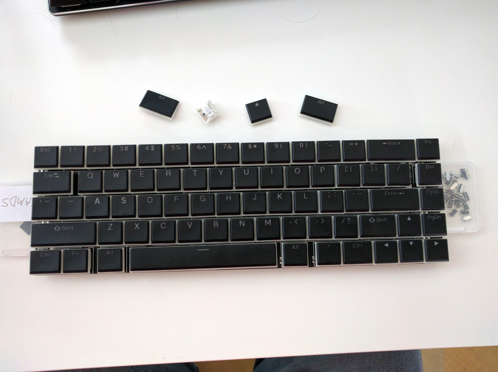

My Space is Too Big¶
Published on 2019-11-13 in Flounder Keyboard.
The PCBs arrived today! They look great:
So of course I had to try and insert all the switches and keycaps to see how they fit. The fit is (intentionally) tight, as I made them a bit denser than on a normal keyboard, but they seem to all fit properly:
With one notable exception: the space bar. You see, since the caps were designed for a looser layout, the space includes a little more room for the gaps between keys, so it’s longer than I anticipated. I now how two options: whittle it down a bit with a dremel to fit, or use the alternate, smaller, ALT keys from the keycap set:
For now I will go with the second option, as it’s less destructive and can always be undone.